자동차정비기사 (2021-03-07 기출문제)
1과목: 일반기계공학
1. 접촉면 안지름 60mm, 바깥지름 100mm의 단판클러치를 1㎾, 1450rpm으로 전동할 때 클러치를 미는 힘(N)은? (단, 클러치 접촉면의 재료는 주철과 청동으로 마찰계수는 0.2이다.)
- 823
- 411
- 82
- 41
(정답률: 26%)

2. 너트의 풀림을 방지하는 방법으로 틀린 것은?
- 스프링 와셔를 사용
- 로크너트를 사용
- 자동 죔 너트를 사용
- 캡 너트를 사용
(정답률: 50%)
3. 축 추력 방지방법으로 옳은 것은?
- 수직 공을 설치
- 평형 원판을 설치
- 전면에 방사상 리브(Lib)를 설치
- 다단 펌프의 회전차를 서로 같은 방향으로 설치
(정답률: 27%)
4. 원형 단면축의 비틀림 모멘트를 구할 때 관계 없는 것은?
- 수직응력
- 전단응력
- 극단면계수
- 축 직경
(정답률: 29%)
5. 금속에 외력이 가해질 때, 결정격자가 불완전하거나 결함이 있어 이동이 발생하는 현상은?
- 트윈
- 변태
- 응력
- 전위
(정답률: 49%)
6. 교차하는 두 축의 운동을 전달하기 위하여 원추형으로 만든 기어는?
- 웜 기어
- 베벨 기어
- 스퍼 기어
- 헬리컬 기어
(정답률: 46%)
7. 고온에 장시간 정하중을 받는 재료의 허용응력을 구하기 위한 기준강도로 가장 적합한 것은?
- 극한 강도
- 크리프 한도
- 피로 한도
- 최대 전단응력
(정답률: 52%)
8. TIG용접에 대한 설명으로 틀린 것은?
- GTAW라고도 부른다.
- 전자세의 용접이 가능하다.
- 피복제 및 플럭스가 필요하다.
- 용가재와 아크발생이 되는 전극을 별도로 사용한다.
(정답률: 46%)
9. 유체기계에서 물속에 용해되어 있던 공기가 기포로 되어 펌프와 수차 등의 날개에 손상을 일으키는 현상은?
- 난류 현상
- 공동 현상
- 멕동 현상
- 수격 현상
(정답률: 43%)
10. 보(beam)의 처짐 곡선 미분방정식을 나타낸 것은? (단, M : 보의 굽힘응력, V : 보의 전단응력, EI : 굽힘강성계수이다.)
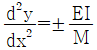
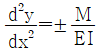
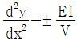
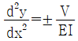
(정답률: 23%)
11. 연삭숫돌 결합도에 대한 설명으로 틀린 것은?
- 결합도 기호는 알파벳 대문자로 표시한다.
- 결합도가 약하면 눈메움(loading)현상이 발생하기 쉽다.
- 결합도는 입자를 결합하고 있는 결합제의 결합상태 강약의 정도를 표시한다.
- 가공물의 재질이 연질일수록 결합도가 높은 숫돌을 사용하는 것이 좋다.
(정답률: 36%)
12. 금속재료를 압축하여 눌렀을 때 넓게 퍼지는 성질은?
- 인성
- 연성
- 취성
- 전성
(정답률: 37%)
13. 다이얼 게이지의 보관 및 취급 시 주의사항으로 틀린 것은?
- 교정주기에 따라 교정 성적서를 발행한다.
- 측정 시 충격이 가지 않도록 한다.
- 스핀들에 주유하여 보관한다.
- 측정자를 잘 선택해야 한다.
(정답률: 62%)
14. 용기 내의 압력을 대기압력 이하의 저압으로 유지하기 위해 대기압력 쪽으로 기체를 배출하는 것은?
- 진공펌프
- 압축기
- 송풍기
- 제습기
(정답률: 64%)
15. 브레이크라이닝의 구비조건으로 틀린 것은?
- 내마멸성이 클 것
- 내열성이 클 것
- 마찰계수 변화가 클 것
- 기계적 강성이 클 것
(정답률: 57%)
16. 금속을 용융 또는 반용융하여 금속주형 속에 고압으로 주입하는 특수주조법은?
- 다이캐스팅
- 원심주조법
- 칠드주조법
- 셀주조법
(정답률: 58%)
17. 지름 22mm인 구리선을 인발하여 20mm가 되었다. 구리의 단면을 축소시키는데 필요한 응력을 303㎏f/cm2라고 할 때 이 인발에 필요한 인발력(㎏f)은 약 얼마인가?
- 100
- 200
- 300
- 400
(정답률: 32%)
18. 황동을 냉간 가공하여 재결정온도 이하의 낮은 온도로 풀림하면 가공 상태보다 오히려 경화되는 현상은?
- 석출 경화
- 변형 경화
- 저온풀림 경화
- 자연풀림 경화
(정답률: 58%)
19. 보스에 홈을 판 후 키를 박아 마찰력을 이용하여 동력을 전달하는 키로서 큰 힘을 전달하는데 부적당한 것은?
- 평 키
- 반달 키
- 안장 키
- 둥근 키
(정답률: 43%)
20. 치수가 동일한 강봉과 동봉에 동일한 인장력을 가하여 생기는 신장률 εs, εc가 8：17이라고 하면, 이때 탄성계수(Es/Ec)의비는?
- 5/6
- 6/5
- 8/17
- 17/8
(정답률: 33%)
2과목: 기계열역학
21. 계가 정적 과정으로 상태 1에서 상태 2로 변화할 때 단순압축성 계에 대한 열역학 제1법칙을 바르게 설명한 것은? (단, U, Q, W는 각각 내부에너지, 열량, 일량이다.)
- U1－U2＝Q12
- U2－U1＝W12
- U1－U2＝W12
- U2－U1＝Q12
(정답률: 21%)
22. 온도 20℃에서 계기압력 0.183MPa의 타이어가 고속주행으로 온도 80℃로 상승할 때 압력은 주행 전과 비교하여 약 몇 kPa 상승하는가? (단, 타이어의 체적은 변하지 않고, 타이어 내의 공기는 이상기체로 가정하며, 대기압은 101.3kPa이다.)
- 37kPa
- 58kPa
- 286kPa
- 445kPa
(정답률: 28%)
23. 증기터빈에서 질량유량이 1.5㎏/s이고, 열손실률이 8.5㎾이다. 터빈으로 출입하는 수증기에 대한 값은 아래 그림과 같다면 터빈의 출력은 약 몇 ㎾인가?
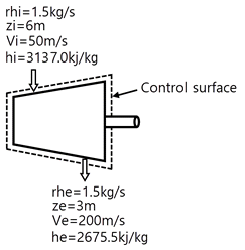
- 273㎾
- 656㎾
- 1357㎾
- 2616㎾
(정답률: 37%)
24. 10℃에서 160℃까지 공기의 평균 정적비열은 0.7315kJ/(㎏·K)이다. 이 온도 변화에서 공기 1㎏의 내부에너지 변화는 약 몇 kJ인가?
- 101.1kJ
- 109.7kJ
- 120.6kJ
- 131.7kJ
(정답률: 45%)
25. 완전가스의 내부에너지(u)는 어떤 함수인가?
- 압력과 온도의 함수이다.
- 압력만의 함수이다.
- 체적과 압력의 함수이다.
- 온도만의 함수이다.
(정답률: 32%)
26. 밀폐용기에 비내부에너지가 200kJ/㎏인 기체가 0.5㎏ 들어있다. 이 기체를 용량이 500W인 전기가열기로 2분 동안 가열한다면 최종상태에서 기체의 내부에너지는 약 몇 kJ인가? (단, 열량은 기체로만 전달된다고 한다.)
- 20kJ
- 100kJ
- 120kJ
- 160kJ
(정답률: 8%)
27. 증기를 가역 단열과정을 거쳐 팽창시키면 증기의 엔트로피는?
- 증가한다.
- 감소한다.
- 변하지 않는다.
- 경우에 따라 증가도 하고, 감소도 한다.
(정답률: 22%)
28. 계가 비가역 사이클을 이룰 때 클라우지우스(Clausius)의 적분을 옳게 나타낸 것은? (단, T는 온도, Q는 열량이다.)
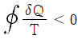
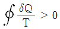
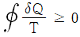
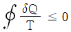
(정답률: 20%)
29. 어떤 냉동기에서 0℃의 물로 0℃의 얼음 2ton을 만드는데 180MJ의 일이 소요된다면 이 냉동기의 성적계수는? (단, 물의 융해열은 334kJ/㎏이다.)
- 2.⑤
- 2.32
- 2.65
- 3.71
(정답률: 15%)
30. 수소(H2)가 이상기체라면 절대압력 1MPa, 온도 100℃에서의 비체적은 약 몇 m3/㎏인가? (단, 일반기체상수는 8.3145kJ/(kmol·K)이다.)
- 0.781
- 1.26
- 1.55
- 3.46
(정답률: 15%)
31. 과열증기를 냉각시켰더니 포화영역 안으로 들어와서 비체적이 0.2327m3/㎏이 되었다. 이때 포화액과 포화증기의 비체적이 각각 1.079×10-3m3/㎏, 0.5243m3/㎏이라면 건도는 얼마인가?
- 0.964
- 0.772
- 0.653
- 0.443
(정답률: 22%)
32. 비열비가 1.29, 분자량이 44인 이상 기체의 정압비열은 약 몇 kJ/(㎏·K)인가? (단, 일반기체상수는 8.314kJ/(kmol·K)이다.)
- 0.51
- 0.69
- 0.84
- 0.91
(정답률: 19%)
33. 온도가 127℃, 압력이 0.5MPa, 비체적이 0.4m3/㎏인 이상기체가 같은 압력 하에서 비체적이 0.3m3/㎏으로 되었다면 온도는 약 몇 ℃가 되는가?
- 16
- 27
- 96
- 300
(정답률: 30%)
34. 증기동력 사이클의 종류 중 재열사이클의 목적으로 가장 거리가 먼 것은?
- 터빈 출구의 습도가 증가하여 터빈 날개를 보호한다.
- 이론 열효율이 증가한다.
- 수명이 연장된다.
- 터빈 출구의 질(quality)을 향상시킨다.
(정답률: 29%)
35. 한 밀폐계가 190kJ의 열을 받으면서 외부에 20kJ의 일을 한다면 이 계의 내부에너지의 변호는 약 얼마인가?
- 210kJ 만큼 증가한다.
- 210kJ 만큼 감소한다.
- 170kJ 만큼 증가한다.
- 170kJ 만큼 감소한다.
(정답률: 37%)
36. 다음 중 가장 낮은 온도는?
- 104℃
- 287°F
- 410K
- 684R
(정답률: 39%)
37. 온도 15℃, 압력 100kPa 상태의 체적이 일정한 용기 안에 어떤 이상 기체 5㎏이 들어있다. 이 기체가 50℃가 될 때까지 가열되는 동안의 엔트로피 증가량은 약 몇 kJ/K인가? (단, 이 기체의 정압비열과 정적비열은 각각 1.001kJ/(㎏·K), 0.7171kJ/(㎏·K)이다.)
- 0.411
- 0.486
- 0.575
- 0.732
(정답률: 26%)
38. 열펌프를 난방에 이용하려 한다. 실내 온도는 18℃이고, 실외 온도는 –15℃이며 벽을 통한 열손실은 12㎾이다. 열펌프를 구동하기 위해 필요한 최소 동력은 약 몇 ㎾인가?
- 0.65㎾
- 0.74㎾
- 1.36㎾
- 1.53㎾
(정답률: 37%)
39. 오토사이클의 압축비(ε)가 8일 때 이론열효율은 약 몇 %인가? (단, 비열비(k)는 1.4이다.)
- 36.8%
- 46.7%
- 56.5%
- 66.6%
(정답률: 28%)
40. 이상적인 카르노 사이클의 열기관이 500℃인 열원으로부터 500kJ을 받고, 25℃에 열을 방출한다. 이 사이클의 일(W)과 효율(ηth)은 얼마인가?
- W＝307.2kJ, ηth＝0.6143
- W＝307.2kJ, ηth＝0.5748
- W＝250.3kJ, ηth＝0.6143
- W＝250.3kJ, ηth＝0.5748
(정답률: 36%)
3과목: 자동차기관
41. 전자제어 가솔린엔진이 워밍업 된 후 아이들 스피드 컨트롤(ISC)의 기능으로 가장 적절한 것은?
- 급가속 시 공기량 보충
- 워밍업 후 연료량을 증가시킴
- 스로틀 밸브 고장 시 기능 대체
- 각종 부하 작용 시 공전속도 조정
(정답률: 75%)
42. 압축압력 시험 준비 작업이 아닌 것은?
- 연료의 공급을 차단한다.
- 엔진을 냉간 상태로 유지한다.
- 모든 점화 플러그를 제거한다.
- 에어클리너 및 구동 벨트를 제거한다.
(정답률: 52%)
43. 전자제어 연료분사 엔진에서 공기흐름 계측에 플랩(flap)의 움직임 양을 전압으로 바꾸어 컴퓨터로 보내는 것은?
- 포텐서미터
- 흡기온 센서
- 대기압 센서
- 스로틀 포지션 센서
(정답률: 50%)
44. 기관의 냉각장치에서 보텀(bottom) 바이 패스 냉각방식의 특징으로 틀린 것은?
- 기관 정지 시 냉각수의 보온 성능이 좋다.
- 수온조절기의 이상 작동이 적어 오버슈트가 많다.
- 기관 내부의 온도가 안정되고, 한랭 시 히터 성능이 안정적이다.
- 수온조절기가 열렸을 때 바이패스 회로를 닫아 냉각효과가 좋다.
(정답률: 63%)
45. 열막(Hot Film)형식 흡입 공기량 센서의 특징으로 틀린 것은?
- 설치 시 제약이 없다.
- 공기량 직접 검출방식이다.
- 질량 유량 검출로 신뢰성이 좋다.
- 흡입공기 온도가 변화해도 측정 상의 오차가 없다.
(정답률: 53%)
46. 전자제어 가솔린 연료분사장치의 피드백 제어에 관한 사항으로 틀린 것은?
- 냉각수 온도가 현저히 낮으면 피드백 제어를 하지 않는다.
- 피드백 제어의 입력 요소는 산소센서이고 출력 요소는 인젝터이다.
- 지르코니아 산소센서의 기전력이 커지면 인젝터 분사시간을 짧게 한다.
- 배기가스 중의 산소 농도가 증가하면 지르코니아 산소센서의 기전력은 커진다.
(정답률: 49%)
47. 피스톤 행정의 길이가 100mm, 엔진의 회전수가 1500rpm인 4행정 사이클 기관의 피스톤 평균속도(m/s)는?
- 4
- 5
- 10
- 14
(정답률: 46%)
48. 다음 중 질소산화물(NOx) 발생량이 많은 경우는?
- 공연비가 농후한 경우
- 점화시기가 빠른 경우
- 냉각수 온도가 낮은 경우
- 엔진의 압축비가 낮은 경우
(정답률: 45%)
49. LPI(Liquid Petroleum injection) 시스템 에서 연료 펌프 제어에 대한 설명으로 옮은 것은?
- 엔진 ECU에서 연료펌프를 제어한다.
- 종합릴레이에 의해 연료펌프가 구동된다.
- 엔진이 구동되면 운전조건에 관계없이 일정한 속도로 회전한다.
- 펌프 드라이버는 운전조건에 따라 연료펌프의 속도를 제어한다.
(정답률: 42%)
50. 자동차 배출가스의 유해성분에 대한 설명으로 틀린 것은?
- 흑연 : 소화기 및 근육신경에 장애를 준다.
- 질소산화물 : 광화학 스모그의 원인이 된다.
- 일산화탄소 : 인체에 산소부족 증상이 나타난다.
- 탄화수소 : 호흡기에 자극을 주고 점막이나 눈을 자극한다.
(정답률: 66%)
51. 이상적인 디젤 사이클의 열효율을 증가 시키는 방법으로 틀린 것은?
- 단절비 감소
- 압축비 증가
- 최고압력 증가
- 최저온도 상승
(정답률: 46%)
52. 다음 설명에 해당하는 것은?
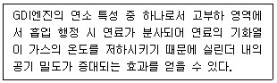
- 예혼합 연소
- 증상 혼합기
- 균질 혼합기
- 약한 성층연소
(정답률: 48%)
53. 자동차 기관의 지압선도로부터 얻을 수 있는 정보가 아닌 것은?
- 도시마력의 계산
- 평균 윤활유 소비량
- 흡·배기 밸브의 개폐시기의 적부
- 연료분사 밸브의 개폐시기의 적부
(정답률: 63%)
54. 피스톤과 실린더 간극이 클 때 일어나는 사항이 아닌 것은?
- 압축압력이 저하된다.
- 오일이 연소실로 올라온다.
- 피스톤 슬랩 현상이 발생한다.
- 피스톤과 실린더의 소력이 발생한다.
(정답률: 69%)
55. 기관의 증배기량이 1400cc인 4행정 사이클 기관이 2570rpm으로 회전하고 있다. 이때 도시평균 유효압력이 10㎏f/cm2이라면 도시마력(PS)은 약 얼마인가?
- 40
- 80
- 100
- 120
(정답률: 13%)
56. 수냉식 기관의 과열 원인이 아닌 것은?
- 냉각 팬이 파손되었을 때
- 물 재킷 내부에 스케일이 없을 때
- 수온 조절기가 닫힌 재 고장이 났을 때
- 구동 벨트의 장력이 적거나 파손되었을 때
(정답률: 70%)
57. 전자제어 가솔린엔진에서 흡입공기량 센서의 고장 시 예상되는 현상으로 틀린 것은?
- 기관의 공회전이 불안하다.
- 주행 중 가속성능이 저하된다.
- 점화플러그가 점화되지 않는다.
- 크랭킹은 가능하나 시동성능이 불량하다.
(정답률: 63%)
58. 평균 유효압력에 대한 설명으로 틀린 것은?
- 평균 유효압력이란 1사이클의 일을 실린더 체적으로 나눈 것이다.
- 지시평균 유효압력은 이론평균 유효압력에 선도계수를 곱한 것이다.
- 제동평균 유효압력은 지시평균 유효압력에 기계효율을 곱한 것이다.
- 마찰평균 유효압력은 지시평균 유효압력에 제동평균 유효압력을 뺀 것이다.
(정답률: 28%)
59. 전자제어 디젤엔진에서 커먼레일 방식의 고압 연료 계통에 설치된 구성품이 아닌 것은?
- 인젝터
- 유입 계측밸브
- 프라이밍 펌프
- 연료압력 제한밸브
(정답률: 60%)
60. EGR율(EGR ratio)을 나타내는 식으로 옳은 것은?
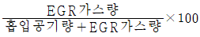
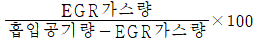
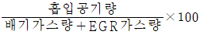
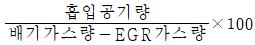
(정답률: 55%)
4과목: 자동차새시
61. 자동변속기 토크 컨버터의 클러치 시스템에서 고장감지 검출조건에 해당하지 않는 것은?
- 출력축 속도센서 100rpm 이하
- 스로틀 밸브 개도 15% 이상
- 엔진회전수 0rpm 이상
- 댐퍼클러치 미작동
(정답률: 29%)
62. 추진측의 굽음 진동인 휠링(whirling)을 일으키는 주요 원인으로 옳은 것은?
- 추진측의 강도 저하
- 슬립이음의 유연성 불량
- 변속기 출력축과 추진측의 접촉 불량
- 추진축의 기하학적 중심과 질량적 중심의 불일치
(정답률: 65%)
63. 프로포셔닝 밸브에 대한 설명으로 옳은 것은?
- 베이퍼 록 현상을 저감시킨다.
- 캘리퍼에 브레이크 잔압을 일정하게 유지하는 기능을 한다.
- 디스크 브레이크와 패드의 에어 갭을 항상 '0' 상태로 유지한다.
- 급제동 시 전륜보다 후륜이 먼저 고착되는 것을 방지하여 차량의 방향성 상실을 방지한다.
(정답률: 63%)
64. 공기식 제동장치에서 압력 조정기의 작용에 대한 설명으로 틀린 것은?
- 공기탱크 내의 압력이 규정값 이상이 되면 압축기의 압축작용을 정지시킨다.
- 공기탱크 내의 압력이 규정값 이하가 되면 압축기의 압축작용을 정지시킨다.
- 압력 조정기는 공기압축기에서 공기탱크에 보내는 압력을 조정한다.
- 앞·뒤 바퀴로 가능 압축공기의 압력을 조정한다.
(정답률: 55%)
65. 자동변속기 차량의 토크 컨버터에서 토크 증대 비율이 가장 클 때는?
- 스톨 포인트일 때
- 클러치 포인트일 때
- 댐퍼클러치 작동일 때
- 오버 드라이브일 때
(정답률: 55%)
66. 자동차 주행성능을 산출함에 있어 자동차 중량 또는 총중량이 적용되지 않는 것은?
- 가속저항
- 구름저항
- 공기저항
- 등판저항
(정답률: 62%)
67. 전자제어 현가장치(ECS)에서 급가속 시의 차고제어로 옳은 것은?
- 앤티 롤링 제어
- 앤티 다이브 제어
- 스카이훅 제어
- 앤티 스쿼트 제어
(정답률: 52%)
68. 전자제어 현가장치의 제어 종류가 아닌 것은?
- 피칭 제어
- 롤 제어
- 다이브 제어
- 토크 스티어 제어
(정답률: 68%)
69. 바퀴의 미끄럼 및 구동력과 관련하여 미끄럼률을 구하는 식은? (단, V : 차체의 주행속도, Vω : 바퀴의 회전속도이다.)
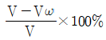
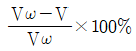
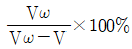
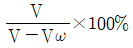
(정답률: 62%)
70. ABS에서 ECU의 출력신호에 의해 각 휠실린더의 유압을 제어하는 것은?
- 모듈레이터
- 릴레이 밸브
- 레귤레이터
- 언로더 밸브
(정답률: 37%)
71. 전자제어 자동변속기 차량에서 토크 컨버터의 유체를 통해 동력을 전달시키지 않고 펌프와 터빈을 직접 구동하는 기능은?
- 터빈 브레이커(turbine breaker) 기능
- 홀드(hold)기능
- 록업(lock up)기능
- 토션 댐퍼(torsion damper) 기능
(정답률: 47%)
72. 유효 반경 0.4m인 바퀴가 600rpm으로 회전할 때 자동차의 주행속도(㎞/h)는약 얼마인가? (단, 주행저항 및 노면에 의한 마찰은 무시한다.)
- 85
- 90
- 95
- 100
(정답률: 32%)
73. 승용자동차의 손조작식 주차제동장치의 측정 시 조작력 기준은? (단, 자동차 및 자동차부품의 성능과 기준에 관한 규칙에 의한다.)
- 70㎏ 이하
- 60㎏ 이하
- 50㎏ 이하
- 40㎏ 이하
(정답률: 40%)
74. 유압식 전자제어 동력조향장치의 특징으로 옳은 것은?
- 공전과 저속에서는 조향핸들 조작력이 무겁다.
- 고속 주행 시 주행 안정성을 위해 조향핸들 조작력을 가볍게 한다.
- 유량제어 솔레노이드 밸브를 통해서 조향 핸들 조작력을 제어한다.
- 중속에서는 차량 속도에 감응하여 조향핸들 조작력을 변화시키지 못한다.
(정답률: 64%)
75. 자동차의 휠베이스가 2.4m 안쪽 바퀴의 최대 조향각이 35°, 바깥쪽 바퀴의 최대 조향각이 30°일 때 이 자동차의 최소 회전반경(m)은? (단, 바퀴 접지면 중심과 킹핀과의 거리는 20㎝이다.)
- 4.4
- 5.0
- 6.2
- 7.4
(정답률: 46%)
76. 수동 변속기에서 기어의 물림 시 2중 물림 방지 기구가 설치되어 있는 곳은?
- 기어와 기어 사이
- 시프트 레일 사이
- 슬리브와 허브 사이
- 싱크로메스 기구 내
(정답률: 52%)
77. ABS에 대한 설명으로 틀린 것은?
- 제동거리를 최소화 한다.
- 제동 시 바퀴가 잠기지 않아 조향을 가능하게 한다.
- 도로와 타이어의 마찰계수는 바퀴 슬립률이 0%일 때 최대가 되는 원리가 적용된다.
- 바퀴의 회전속도를 검출하여 그 변화에 따라 제동력을 제어하는 방식이다.
(정답률: 43%)
78. 전기회생제동장치가 주제동장치의 일부로 작동되는 경우에 대한 설명으로 틀린 것은? (단, 자동차 및 자동차부품의 성능과 기준에 관한 규칙에 의한다.)
- 주제동장치의 제동력은 동력 전달계통으로부터의 구동전동기 분리 또는 자동차의 변속비에 영향을 받는 구조일 것
- 전기회생제동력이 해제되는 경우에는 마찰제동력이 작동하여 1초 내에 해제 당시 요구 제동력의 75% 이상 도달하는 구조일 것
- 주제동장치는 하나의 조종장치에 의하여 작동되어야 하며, 그 외의 방법으로는 제동력의 전부 또는 일부가 해제되지 아니하는 구조일 것
- 주제동장치 작동 시 전기회생제동장치가 독립적으로 제어될 수 있는 경우에는 자동차에 요구되는 제동력을 전기회생제동력과 마찰제동력 간에 자동으로 보상하는 구조일 것
(정답률: 29%)
79. 주행 중 타이어에서 발생하는 스탠딩 웨이브 현상의 방지방법으로 틀린 것은?
- 정속으로 주행한다.
- 타이어 공기압을 표준보다 높인다.
- 전동 저항을 증가시킨다.
- 강성이 큰 타이어를 사용한다.
(정답률: 63%)
80. 자동차의 조향핸들이 무거운 원인이 아닌 것은?
- 타이어 공기압력 과대
- 조향기어 백래시가 작음
- 앞바퀴 정렬상태가 불량
- 타이어 마멸 과다
(정답률: 50%)
5과목: 자동차전기
81. 자동차규칙상 경음기에 대한 설명으로 틀린 것은?
- 동일한 음색으로 연속하여 소리를 내는 것일 것
- 자동차 경음기는 사이렌 및 종을 포함할 것
- 음의 최소크기는 90데시벨(C) 이상일 것
- 경적음의 크기는 일정하여야 할 것
(정답률: 56%)
82. 주행안전장치에서 AFLS(Adaptive Front Lighting System)의 주요 제어 기능에 관한 설명으로 적절하지 않은 것은?
- Dynamic Bending - 곡선 도로에서 차량 진행 방향에 최적의 조명 제공
- Auto Leveling - 차량의 기울기 조건에 대한 헤드램프 로우 빔의 현상
- Around View Monitoring - 운전자가 원하는 주변 부분 감지
- 페일 세이프 - 시스템 고장 및 오동작 감지 시에 안전모드 동작
(정답률: 46%)
83. 자동차 에어컨 냉매의 구비조건으로 틀린 것은?
- 응축압력이 적당히 낮을 것
- 비등점이 적당히 낮을 것
- 증기의 비체적이 작을 것
- 증발잠열이 작을 것
(정답률: 45%)
84. 기동전동기 회전이 느려지는 원인으로 틀린 것은?
- 점화 스위치의 결함일 때
- 정류자의 상태가 불량할 때
- 배터리 방전으로 전압이 낮을 때
- 전기자 코일의 접지 상태가 불량할 때
(정답률: 55%)
85. 배터리 격리판의 구비조건으로 틀린 것은?
- 내진성과 내산성이 커야 한다.
- 기계적인 강도가 커야 한다.
- 전도성이 좋아야 한다.
- 다공성이어야 한다.
(정답률: 43%)
86. HID 전조등에 대한 설명으로 틀린 것은?
- 얇은 캡슐 형태의 방전관 내에 크세논 가스, 수은 가스, 금속 할로겐 성분 등이 있다.
- 플라즈마 방전으로 빛이 발생된다.
- 형광등과 같은 구조이다.
- 필라멘트가 설치되어 있다.
(정답률: 48%)
87. 전자력에 대한 설명으로 틀린 것은?
- 자계의 세기에 비례한다.
- 자력에 의해 도체가 움직이는 힘이다.
- 도체의 길이, 전류의 크기에 비례한다.
- 자계방향과 전류의 방향이 평행일 때 가장 크다.
(정답률: 61%)
88. 하이브리드 자동차의 고전압 배터리(＋) 전원을 인버터로 공급하는 구성품은?
- 전류 센서
- 고전압 배터리
- 세이프티 플러그
- 프리 차저 릴레이
(정답률: 48%)
89. 하이브리드 자동차 용어 (KS R 0121)에서 충전시켜 다시 쓸 수 있는 전지를 의미하는 것은?
- 1차 전지
- 2차 전지
- 3차 전지
- 4차 전지
(정답률: 60%)
90. 디젤엔진에서 매연 발생이 심한 원인으로 틀린 것은? (단, 터보장착 차량이다.)
- 에어클리너가 막혔다.
- 분사노즐에서 후적이 심하다.
- 오일 필터가 불량이다.
- 기관의 연소온도가 너무 낮다.
(정답률: 55%)
91. 자동차규칙상 타이어 공기압 경고장치의 성능기준에 대한 아래 설명에서 ( ) 안의 내용이 순서대로 짝지어진 것은?
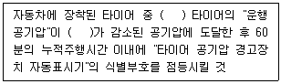
- 2개, 20%
- 4개, 20%
- 2개, 30%
- 4개, 30%
(정답률: 36%)
92. 저항 2.5Ω에 전류 10A를 40분 동안 흐르게 하였을 때 소비된 전력량(㎾h)은?
- 0.167
- 1.248
- 2.597
- 3.241
(정답률: 29%)
93. 전압 110V, 전류 65A인 발전기의 출력(PS)은? (단, 발전기의 효율은 85%이다.)
- 0.25
- 0.8
- 7
- 8.26
(정답률: 33%)
94. 전기 자동차용 전동기에 요구되는 조건으로 틀린 것은?
- 구동 토크가 작아야 한다.
- 고출력 및 소형화해야 한다.
- 속도제어가 용이해야 한다.
- 취급 및 보수가 간편해야 한다.
(정답률: 72%)
95. 배전기 방식의 점화장치에서 크랭크각과 1번 실린더 상사점을 감지하는 방식이 아닌 것은?
- 다이오드(diode) 방식
- 옵티컬(optical) 방식
- 인덕션(induction) 방식
- 홀 센서(hall sensor) 방식
(정답률: 46%)
96. 에어백(Air Bag)의 구성부품이 아닌 것은?
- 옆면 충격 검출 센서
- 클럭 스프링
- 프리 텐셔너
- 요레이트 센서
(정답률: 60%)
97. 반도체의 일반적인 성질이 아닌 것은?
- 다른 금속이나 반도체와 접속하면 정류작용, 증폭작용 및 스위칭 작용을 한다.
- 열을 받으면 전기저항 값이 변화하는 제베크 효과를 나타낸다.
- 빛을 받아도 고유저항이 변하지 않는다.
- 압력을 받으면 전기가 발생한다.
(정답률: 47%)
98. 자동차규칙상 앞면창유리에 설치하는 창 닦이기 장치에 대한 설명으로 틀린 것은? (단, 초소형자동차는 제외한다.)
- 작동주기의 종류는 2가지 이상일 것
- 최고작동주기와 다른 하나의 작동주기의 차이는 매분당 20회 이상일 것
- 작동을 정지시킨 경우 자동적으로 최초의 위치로 복귀되는 구조일 것
- 최저작동주기는 매분당 20회 이상이고, 다른 하나의 작동주기는 매분당 45회 이상일 것
(정답률: 52%)
99. 교류발전기에서 B단자(출력단자)를 연결 하지 않은 상태로 엔진을 장시간 고속 회전하였을 때 발생되는 현상은?
- 과충전이 일어난다.
- 로터 코일이 단선된다.
- 충전 경고등이 점등된다.
- 충전이 안 되지만 이상은 없다.
(정답률: 52%)
100. 일반적인 자동차 통신에서 고속 CAN 통신이 적용되는 부분은?
- 멀티미디어 장치
- 펄스폭 변조기
- 차체 전장부품
- 파워 트레인
(정답률: 45%)
F = μN
여기서, F는 클러치를 미는 힘, μ는 마찰계수, N은 전동기의 출력이다.
전동기의 출력은 1kW = 1000W 이므로,
N = P / ω = 1000 / (2π × 1450 / 60) ≈ 6.12 Nm
클러치 접촉면의 면적은 다음과 같이 계산할 수 있다.
A = π/4 × (D2 - D1) = π/4 × (1002 - 602) ≈ 3141.59 mm2
클러치 접촉면에 작용하는 압력은 다음과 같이 계산할 수 있다.
P = F / A
여기서, P는 압력이다.
클러치 접촉면의 재료가 주철과 청동이므로, 마찰계수는 0.2이다.
따라서, F = μN = 0.2 × 6.12 ≈ 1.22 N
P = F / A = 1.22 / 3141.59 × 10-6 ≈ 388.2 Pa
클러치를 미는 힘은 다음과 같이 계산할 수 있다.
F = P × A = 388.2 × 3141.59 × 10-6 ≈ 1.22 N
따라서, 클러치를 미는 힘은 약 1.22 N이다. 이 값은 보기 중에서 "41"과 "82"보다 작고, "411"보다 크다. 따라서, 정답은 "823"이다.